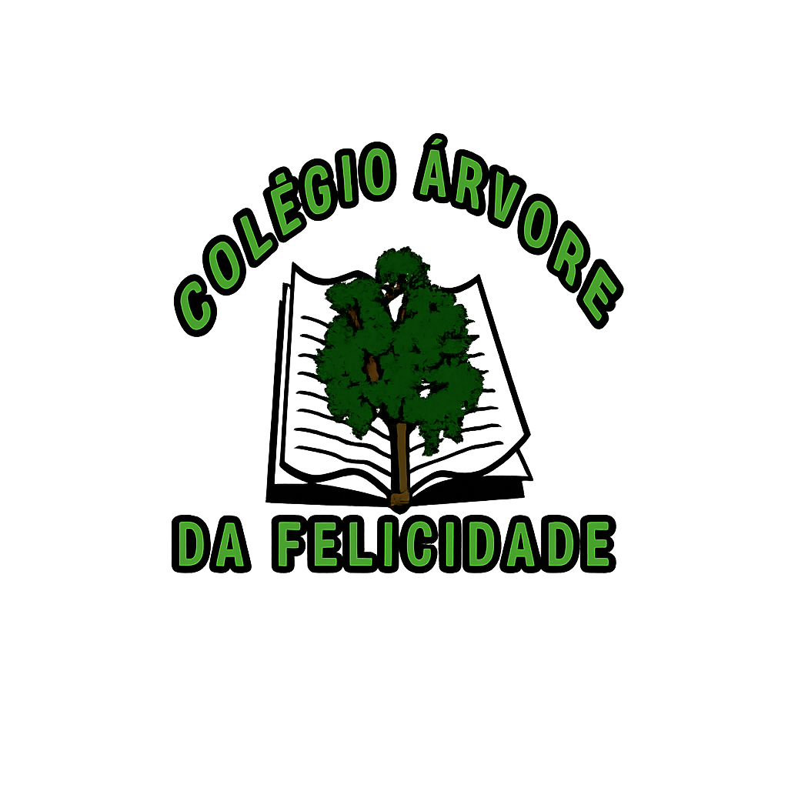
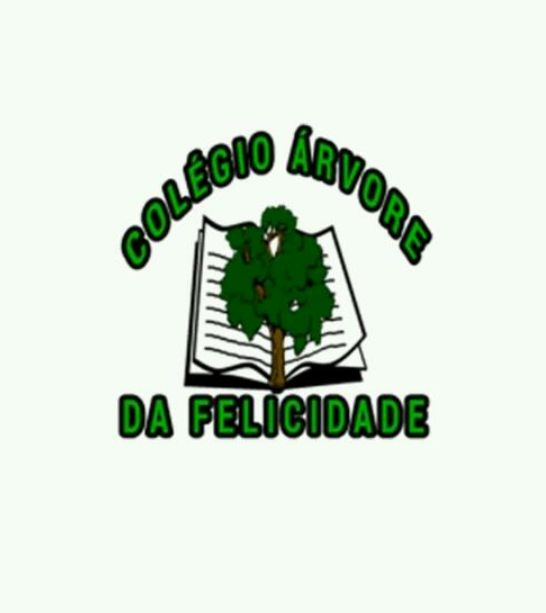
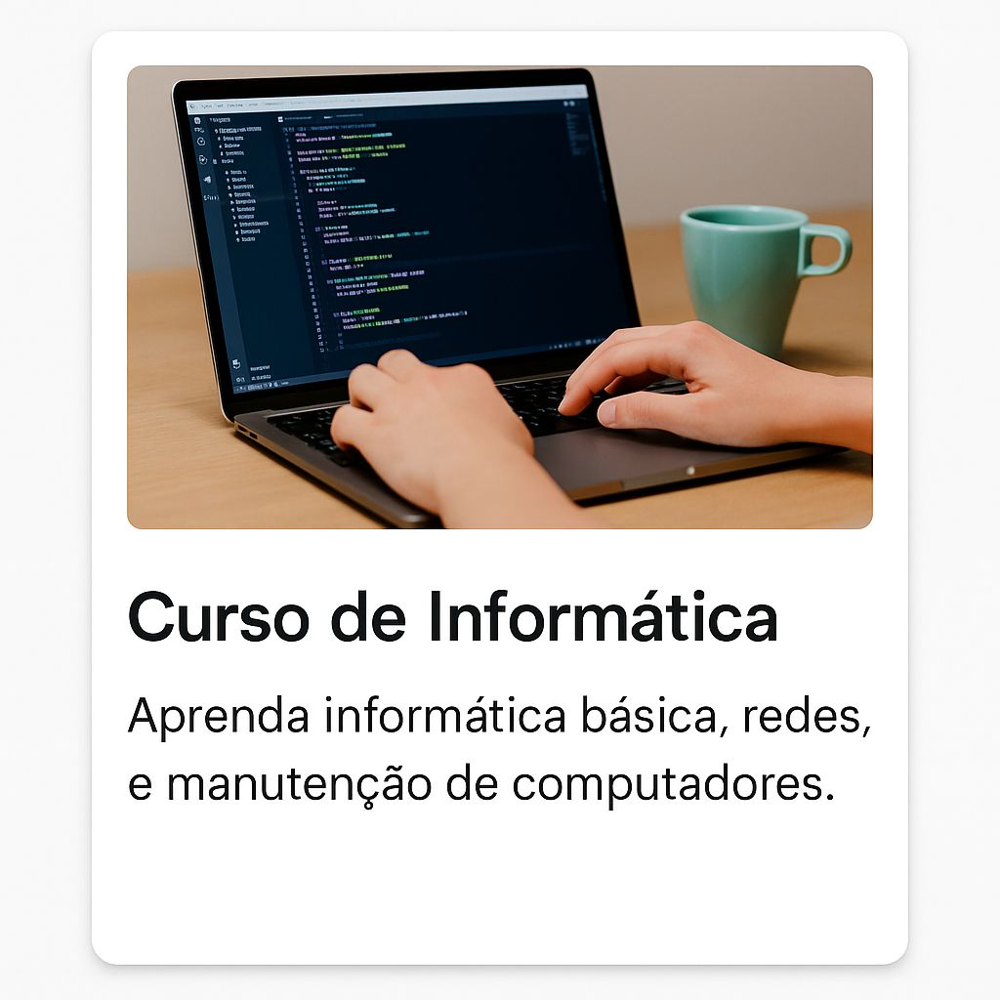
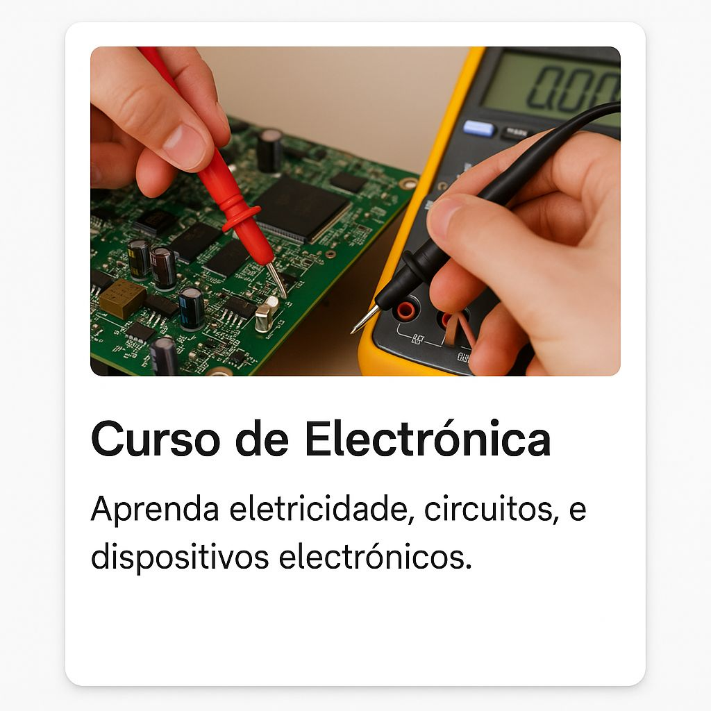

O Colégio Árvore da Felicidade (CAF) é uma escola privada de ensino em Luanda, Angola, que oferece educação desde o ensino básico até o ensino secundário, incluindo cursos técnicos como Electrónica & Telecomunicações e Informática.
O colégio ministra diversas classes e áreas de formação, incluindo: Ensino Primário (iniciação até 6ª classe) 1.º e 2.º ciclo do Ensino Secundário (até 12.º ano) Cursos técnicos em Electrónica, Telecomunicações e Informática Esses detalhes aparecem em comunicados e listas de aulas da instituição.

A escola realiza muitas atividades extracurriculares e eventos, tais como: Jornadas científicas e piqueniques Visitas educativas (por exemplo, ao Porto de Luanda) Palestras e atividades culturais Limpeza e manutenção da quadra desportiva Feira de Ciências e exposições para os estudantes Essas atividades foram documentadas ao longo dos anos no blog da instituição.
Participação e destaque em competições O colégio tem participado de eventos educativos e tecnológicos. Por exemplo, a equipa de robótica do CAF foi a vencedora da 3ª edição do Campeonato Nacional de Robótica, representando a escola em competições nacionais e podendo representar o país a nível internacional
Uma escola com um ensino fantástico!
 |
 |